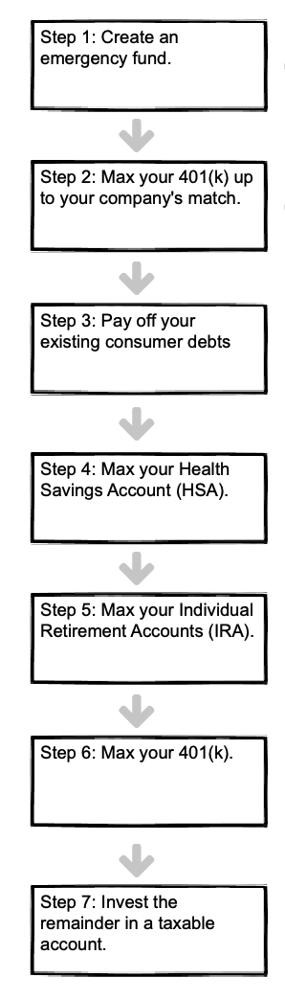

Financial freedom · Part 4
Chapter 13: Investment order

A seven-step checklist to maximize your returns
Alright, you've reduced your expenses and increased your income. Now it's time to put your extra cash to work.
But how?
Keep reading, or click a link below to skip ahead.
(Before you dive in, however, please note: this article is about which accounts you should invest in. For more information about what assets to buy—and which account to place them in—go to the Asset Allocation page. It'll be fun, I promise.)
Invest in the following order:
1. Create an emergency fund
Bad things happen. So when they do, be prepared. Put your money in an account that guarantees the principle, is highly liquid, and ideally offers a rate of return (even if it's 1%).
Based on the above criteria, your options are:
-
A money-market account; Vanguard Prime Money Market Fund (VMMXX) is a good example. (Note: this is not insured, your principle is not guaranteed.)
-
A checking or savings account with your bank. (This option provides liquidity, so you can pull money out in a pinch.) These accounts are usually FDIC-insured up to $250,000.
-
A series of short-term bonds, which you can purchase on TreasuryDirect.gov. (This works especially well for US citizens living in a high-tax state because Treasury income is exempt from state tax.)
Important: Whichever account you choose, create a dedicated account for your emergency fund—and never touch it. Don't just leave your emergency fund lying around in your checking account, along with all your other money; if you do, you're going to blow it on something stupid. Trust me: I do stupid things all the time.
All you need to know: Your emergency fund is good defense: save up 1–6 months expenses—whatever amount will let you sleep at night—keep it in a standalone account, and proceed to the next step.
2. Max your 401(k) up to your company's match (usually 3–6% of your pay)
This is free money. Take it. If your employer offers to match your contribution, that is literally doubling your money with the click of a button. You won't get a better return anywhere else.
But for now, only contribute as much as your employer is willing to match—and not a penny more. You'll see why in steps 5 and 6.
All you need to know: Find out how much money your employer matches. Contribute that exact amount for now. You may contribute more when you get to step 6 below.
3. Pay off your debt
Debt sucks. Pay your debt off as quickly as possible. Compound interest is a real thing—and while it works great for growing assets, it works against you in the form of debt.
Therefore, eliminate your consumer debt; this includes credit cards, student loans, and all other loans besides your mortgage.
Two different approaches to paying off debt are:
-
Option 1: Start with the highest interest rate first.
-
Option 2: Start with the smallest debt first.
As a quick example, let's say you have three debts:
-
1k in car loans at 4% interest;
-
3k in credit card debt at 12% interest; and
-
5k in student loans at 6% interest.
If you go with Option 1, you'll pay them off, starting with the highest interest rate, in this order:
- Credit card -> Student loan -> Car loan
If you go with Option 2—starting from smallest to largest—you'll pay your debts off in this order:
- Car loan -> Credit card -> Student loan So which option is right for you? I recommend Option 1—paying off the highest interest rate first—because it delivers a better return on investment.
However, and this is incredibly important, Option 2 may be better for you if it helps you sleep better at night. If you feel like each debt is a chain wrapped around your waist, then by all means unshackle yourself from the smallest one first! The relief that comes from eliminating a debt may be worth more to you psychologically than financially. And in the end, you're still climbing out of debt, and toward your goal of financial freedom—which is what matters most!
All you need to know: If you have debt, pay this off asap. It's the complete opposite of building wealth.
4. Max your Health Savings Account (HSA)
A Health Savings Account is the only investment vehicle that lets you invest, grow, and withdraw tax-free.
Because of this "triple-threat" in tax efficiency, contribute the max to your HSA annually.
Before you contribute, however, consider the following:
-
In order to qualify, you must have a qualifying, high-deductible insurance plan. High-deductible insurance plans are just that: they have high deductibles (what you pay before your insurance kicks in) and low premiums (how much you pay each month for the insurance)—which loosely translates to "cheap, crappy insurance".
-
You can contribute until tax day the following year (~April 15, give or take a day), provided you don't exceed the annual HSA contribution limits set by the IRS.
-
You can contribute around $3,500 if single and $7,000 if married, plus an extra $1,000 "catch up" contribution if you are over 55. (These are just estimates, however; use this Google link to see current contribution limits.)
-
You can invest the annual amount if you're insured starting on December 01. For example, let's say you got your high-deductible insurance plan on November 20. You can contribute the full amount—the same as if you were insured the entire year—and deduct it on your tax return the following April. (The "catch up" contribution for people over 55 still applies.) One caveat: you must be enrolled in your high-deductible plan for the following calendar year.
-
Combine multiple HSAs (if you have them). If you have an HSA from a previous employer, combine it with your existing one. Not only is this tidier—fewer accounts is usually a good thing—you'll also qualify for HSAs that require a large minimum investment.
-
To take advantage of the tax savings, pay your medical expenses out-of-pocket—and save your receipts! Paying your medical expenses out-of-pocket lets your money invested in your HSA continue to grow, and compound, and grow some more.
-
Pull your money out tax-free whenever you wish—and spend it on whatever you want. If you've followed the previous step and paid for your medical expenses out-of-pocket (and kept the receipts!) then you can pull that same amount out of you HSA, at any time, completely tax-free.
To recap the last point, let's use a quick example:
If you've invested $10,000 into your HSA...
...and spent $8,000 on medical expenses (either at once or over several years)...
...you can withdraw $8,000, tax-free, and spend it how you wish.
(And remember: you invested that original $10,000 with pre-tax money!)
All you need to know: HSAs let you invest with tax-free dollars. Your money grows tax-free, and you withdraw it tax-free. To qualify, you must have a high-deductible insurance plan; to withdraw your money tax-free, you must have receipts proving you've spent an equivalent amount on medical expenses over the years.
5. Max your Individual Retirement Accounts (IRA)
IRAs come in several flavors: while each are tasty, finding the right flavor for you depends on several factors. Let's review each option, noting their subtle—and not so subtle—differences, before sinking your teeth in your preferred choice.
While there are many different types of IRAs, the two most common are a Traditional IRA and a Roth IRA.
| Traditional IRA | Roth IRA |
|---|---|
| Money goes in tax-free | Money is taxed going in |
| Money grows tax-free | Money grows tax-free |
| Money (investment and earnings) are taxed on withdrawal | Money (investment and earnings) are tax-free on withdrawal |
A Traditional IRA provides two big tax advantages:
-
Money goes in tax-free.
-
Money grows tax-free.
Those are great, but the snakebite comes at the end: You pay taxes on your distributions. (Distributions is fancy government-speak for "withdraw money.") Note: you will need to pay tax on both earnings and gains—the whole enchilada.
A Roth IRA, on the other hand, collects taxes upfront:
-
Money goes in with after-tax money.
-
Money grows tax-free.
-
Money is withdrawn tax-free.
Perhaps this visual will help you:
| Contribution (Money goes in) | Growth | Withdrawal (Money comes out) | |
|---|---|---|---|
| Traditional IRA | Tax-free | Tax-free | Taxed |
| Roth IRA | Taxed | Tax-free | Tax-free |
So which is right for you?
Use the following rule:
-
If your income is high, a Traditional IRA gives you a nice tax-break now.
-
If your income is low, a Roth IRA will give you a nice tax-break later.
Let's look at each.
If your income is currently high and you plan to lower your income when you "retire"—use a Traditional IRA
If your income is high, investing in a Traditional IRA gives you a much-needed tax-break now, and lets your earnings grow tax-free. You will need to pay taxes on the distributions (remember, "distributions" are the money you withdraw), but you will likely be in a much lower tax bracket when that happens.
Now, you may be wondering: why on earth would I be in a lower tax bracket down the road? Isn't the whole point to have more money later on in life?
Here's why: since you're reading this, I can safely assume that—in addition to being smart, strategic, forward thinking, sexy as hell, and loved by the masses—you are interested in achieving financial freedom much earlier than the average retiree.
Good for you.
So if you find yourself taking a year, or even a decade, off work to recharge, you'll find yourself in a lower tax-bracket, which means you can withdraw money from your Traditional IRA—and pay little or no tax!
(Note: the strategy mentioned above is called a Roth Ladder. It's an advanced topic and outside the scope of this article.)
If your income is low—use a Roth IRA
If your income is relatively low, you are better off investing in a Roth IRA because your income tax is low upfront, and you can let your investments grow tax-free for years—or even decades—and then pull your earnings out tax-free. That's pretty sweet.
All you need to know: In a nutshell, if you believe your income will be higher in the future, invest in a Roth IRA; if you believe it will be lower, invest in a Traditional IRA.
Bonus tip: If you plan on making significantly less money in any year—either by working less, taking a lower-paying job, or just enjoying some good ole' time off—you can use a Roth Ladder to convert your Traditional IRA to a Roth, tax-free.
6. Max your 401(k)
This one's pretty simple. In step 3 you funded your 401(k) to get the maximum matching dollars from your employer. In step 5, you maxed out your IRA because an IRA gives you greater flexibility and lower fees than a 401(k).
Now, put as much money as you can into your 401(k) to enjoy the tax breaks. Note: use this Google link to see the current limits for 401(k) contributions.
All you need to know: After maxing your IRA, max your 401(k) contribution. Pretty simple.
7. Invest the remainder in a taxable account
Rock on! You made it to the last step.
As you've probably guessed, your taxable accounts—unlike the other vehicles you've invested in so far—have no tax benefit.
And that's OK.
Because if you've made it this far, you've built an emergency fund, killed your debts, and funded your 401(k)s, HSAs and IRAs—which puts you ahead of 99% of other people. Any money you put into a taxable account is gravy.
All you need to know: Taxable accounts should be funded last. Depending on your situation, your taxable account may be relatively small—or it may be your largest account. The key point is to invest in the vehicles described on this page, in the order presented—do that, and you're well on your way to financial freedom.